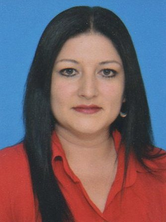

|  |
|
|---|
Ingeniero de Sistemas con formación en manejo de Hardware y desarrollo para proyectos Software. Persona ética con sentido de pertenencia y excelente manejo en las relaciones publicas, personales y laborales. Experiencia en consecución de objetivos, liderazgo, trabajo en equipo, alta capacidad de innovación y comunicación, fácil adaptabilidad al cambio, gran espíritu de servicio, generando soluciones.
ESCUELA COLOMBIANA DE INGENIERIA "JULIO GARAVITO"
Ingeniero de Sistemas
Julio 2005.
CENTRAL TECH Microsoft Certified IT Professional Server Administrator Windows 2008 (MCITP SA Win 2008)
SERVICIO NACIONAL DE APRENDIZAJE "SENA"
English Discoveries INTERMEDIO I.
Marzo 2009.
SERVICIO NACIONAL DE APRENDIZAJE “SENA”
English Discoveries – BASICO III.
Diciembre 2008.
SERVICIO NACIONAL DE APRENDIZAJE “SENA”
English Discoveries – BASICO II.
Noviembre 2008.
SERVICIO NACIONAL DE APRENDIZAJE “SENA”
English Discoveries – BASICO I.
Agosto 2008.
ACIS (Asociación Colombiana de Ingenieros de Sistemas)
VII JORNADA NACIONAL DE SEGURIDAD INFORMÁTICA
Junio 2007.
KOE CORPORATION.
Curso de inglés, nivel Intermedio.
Noviembre 2006.
COMPUTECH.
Ensamble y mantenimiento de computadores
Agosto de 2005.
UNIVERSIDAD INCCA DE COLOMBIA.
Diplomado en Gestión de Proyectos.
Julio de 2002.
COLEGIO MARÍA AUXILIADORA.
Bachiller académico
Noviembre de 1998.
INSTITUTO DE DESARROLLO URBANO I.D.U.
CONTRATO IDU-364-2018
Cargo: Contratista – Ingeniero de Sistemas.
Funciones: Prestar servicios profesionales para desarrollar, soportar y mantener los sistemas de información de segundo nivel, para temas relacionados con los aplicativos que soportan la funcionalidad operativa de la entidad.
Tiempo: De 17 de Enero de 2018 a la Fecha.
Jefe Inmediato: Ingeniera Leydy Yohana Pineda Afanador.
Teléfono: 3386660 Ext 1411 - www.idu.gov.co.
INSTITUTO DE DESARROLLO URBANO I.D.U.
CONTRATO IDU-440-2017
Cargo: Contratista – Ingeniero de Sistemas.
Funciones: Prestar servicios profesionales para desarrollar, soportar y mantener los sistemas de información de segundo nivel, para temas relacionados con los aplicativos que soportan la funcionalidad operativa de la entidad.
Tiempo: De 18 de Enero de 2016 al 15 de Enero de 2018.
Jefe Inmediato: Ingeniero Gustavo Vélez Achury.
Teléfono: 3386660 Ext 1411 - www.idu.gov.co.
INSTITUTO DE DESARROLLO URBANO I.D.U.
CONTRATO IDU-130-2016
Cargo: Contratista – Ingeniero de Sistemas.
Funciones: Prestar servicios profesionales para desarrollar, soportar y mantener los sistemas de información que soportan la operación de la entidad, para los sistemas de mejoramiento de la gestión y de la capacidad operativa de las entidades, en el marco de los planes, programas, procesos y proyectos encaminados al fortalecimiento institucional para el mejoramiento de la gestión del IDU.
Tiempo: De 06 de Abril de 2016 al 31 de Diciembre de 2016.
Jefe Inmediato: Ingeniero Gustavo Vélez Achury.
Teléfono: 3386660 Ext 1411 - www.idu.gov.co.
INSTITUTO DE DESARROLLO URBANO I.D.U.
CONTRATO IDU-97-2015
Cargo: Contratista – Ingeniero de Sistemas.
Funciones: Prestar servicios profesionales para mantener las aplicaciones que integran la plataforma informática, como proporcionar el soporte y mantenimiento de los sistemas de información a su cargo con base en conocimientos avanzados en SQL y lineamientos en el desarrollo de aplicaciones, para una Bogotá hacia un gobierno digital y una ciudad inteligente, en el marco de los planes, programas, procesos y proyectos encaminados al fortalecimiento de las tecnologías de la información y las comunicaciones -TIC.
Tiempo: De 04 de Febrero de 2015 al 18 de Marzo de 2016.
Jefe Inmediato: Ingeniero Gustavo Vélez Achury.
Teléfono: 3386660 Ext 1411 - www.idu.gov.co.
INSTITUTO DE DESARROLLO URBANO I.D.U.
CONTRATO IDU-206-2014
Cargo: Contratista – Ingeniero de Sistemas.
Funciones: Prestar servicios de apoyo a la gestión para mantener las aplicaciones que integran la plataforma informática, como proporcionar el soporte y mantenimiento de los sistemas de información a su cargo con base en conocimientos avanzados en SQL y lineamientos en el desarrollo de aplicaciones, en el marco de los planes, programas, procesos y proyectos encaminados al fortalecimiento Institucional para el mejoramiento de la gestión del IDU.
Tiempo: De 03 de Febrero de 2014 al 02 de Febrero de 2015.
Jefe Inmediato: Doctora María Del Pilar Grajales.
Teléfono: 3386660 Ext 3301 - www.idu.gov.co.
Ing. John Jairo Ardila
Contratista Instituto de Desarrollo Urbano
Cel.: 310 320 60 88
Ing. Diana Patricia Girón
Ingeniero de Sistemas
Cel.: 316 691 91 27
Javier Mauricio Ríos Linares.
Ingeniero Mecatrónico.
Cel.: 300 211 93 19 – 301 338 4919.